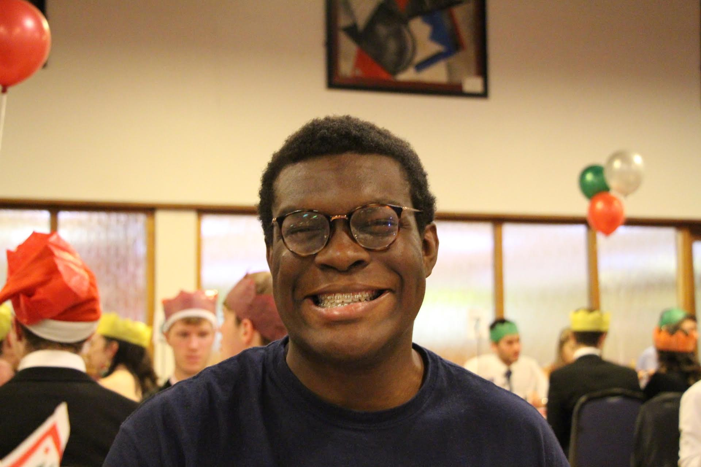
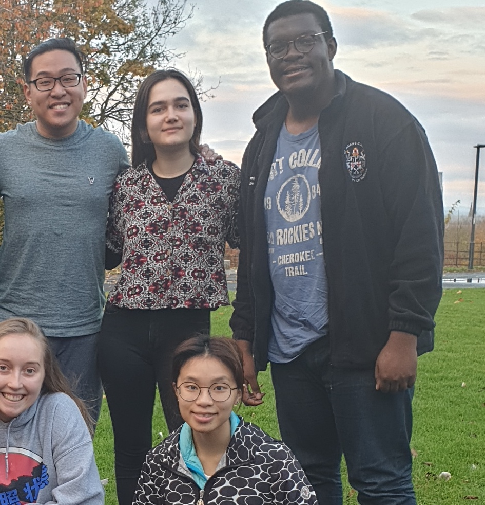

Thanks to college I've had a lot of gud timez ovver the years. I'd like to share some highlights!!
Baby me at matriculation (ft Connor moving faster than the human eye can see)

Me being happy about getting to eat at a formal whilst on photo duty. (Thanks Ammiya)
Me being happy about not ruining the collective sound of durhams choirs with my wailing.

Me being happy abt joining a society (feat int soc and smexi aidans stash)
Me being happy about bein international (feat Emma!)
As you can see I've had a pretty good time at aidans (so much so that I signed on for four more years). But before coming here I was pretty worried i wouldnt make any friends or enjoy it at all and the freps and the larger community at aidans were big things that changed my perceptions once I got here and I would like to do the same for new freshers!!
Thank you for coming to my Ted talk